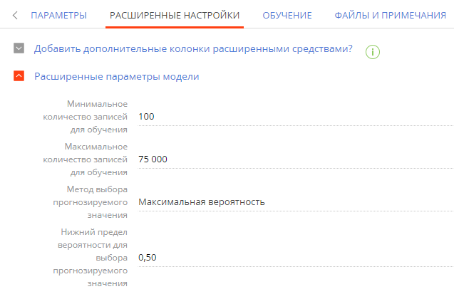

В Creatio вы можете настраивать и обучать модели машинного обучения, чтобы выполнять прогнозирование значений заданных справочных полей. Поля будут заполняться автоматически на основании данных текущей записи и решений, принятых пользователями ранее в аналогичных ситуациях. Например, вы можете настроить модель, которая будет предсказывать наиболее вероятную категорию контрагента. Прогнозирование сервиса и группы ответственных по обращению с использованием данной модели машинного обучения доступно в системе по умолчанию.
1. Добавить новую модель
Чтобы создать модель прогнозирования значений справочных полей:
- В рабочем месте Студия откройте раздел Модели машинного обучения.
- Нажмите кнопку Добавить модель —> Прогнозирование справочного поля.
- Заполните мини-карточку создания модели (Рис. 1):
- Название — введите название модели, по которому ее будет легко найти в реестре раздела Модели машинного обучения и при настройке бизнес-процесса с элементом Прогнозирование данных.
- Тип — тип модели машинного обучения. В данном примере — “Прогнозирование справочного поля”. Поле заполняется автоматически при выборе типа модели на предыдущем шаге.
- Объект — выберите объект, по записям которого будет выполняться прогнозирование, в данном примере — “Контрагент”.
- Сохраните мини-карточку и перейдите к настройке параметров модели прогнозирования справочного поля по кнопке Далее.
2. Настроить параметры модели
После заполнения обязательных полей укажите параметры модели:
- Какое значение необходимо прогнозировать? — выберите поле, для которого будет выполняться прогнозирование значения. Например, для прогнозирования категории контрагента выберите из списка поле Категория. В списке представлены все справочные поля, которые есть на странице указанного объекта. В результате прогнозирования поле будет автоматически заполнено одним из значений справочника Категории контрагентов.
- От каких колонок зависит прогнозируемое значение? — выберите “Колонку объекта” или “Связанную колонку”, чтобы добавить колонки, которые будут использоваться системой для определения алгоритмов поведения, связанных с прогнозируемым полем. Например, если обычно вы определяете категорию контрагента, исходя из количества сотрудников, оборота и отрасли, в которой работает контрагент, то укажите колонки объекта Количество сотрудников, Годовой оборот и Отрасль. Система изучит значения этих колонок в исторических записях и их соотношение со значениями колонки Категория.
-
Какие записи должны попасть в обучающую выборку? — настройте фильтр, на основании которого система будет отбирать записи для обучения моделей. В нашем примере необходимо сузить выборку, выбрав для обучения модели только те записи, в которых указана категория контрагента. Для этого установите следующий фильтр: “Категория заполнено”.
Вы можете не указывать условия фильтрации. В этом случае для обучения будут использоваться все записи. - В какую колонку сохранять результат прогнозирования? — укажите, где в системе будет сохраняться результат прогноза. Обычно прогнозное значение сохраняется в колонку, значение которой требовалось предсказать. Если вы не хотите, чтобы система изменяла значение прогнозируемой колонки, то укажите другую колонку для сохранения прогноза.
-
Настройка автоматического обучения модели — перетяните ползунок вправо, чтобы задать параметры автоматического переобучения модели на основании обновленных исторических данных.
-
В поле Переобучать через, дней укажите длительность перерыва между обучениями модели. По истечении указанного количества дней модель будет отправлена на переобучение с использованием исторических данных, которые соответствуют настроенным фильтрам. Первое обучение модели проводится по нажатию кнопки Обучить модель. Если вы не хотите переобучать модель, то оставьте поле незаполненным или введите “0”.
-
В поле Нижний порог допустимого качества укажите наименьшее допустимое значение точности прогноза. При первом обучении модели это значение определит точность прогноза, по достижении которой экземпляры модели могут применяться для работы в системе. Экземпляры, не достигшие нижнего порога допустимого качества, системой не используются. Рекомендуется указывать нижний порог допустимого качества более 0,5. Точность прогноза варьируется от 0,00 до 1,00, где 1,00 — это максимально точный прогноз, а 0,00 — наименее точный. Точность прогноза рассчитывается как отношение количества правильно спрогнозированных значений к общему количеству исторических данных, на которых проводилось обучение. Подробно о механизме расчета точности прогнозов читайте в документации Google.
-
- В группе полей Настройка фонового обновления результатов прогнозирования перетащите вправо ползунок и настройте условия фильтра, если вы хотите, чтобы для выбранных записей ежедневно в заданное время выполнялось обновление результатов прогнозирования (Рис. 2). Если вы не зададите условия фильтра, но включите фоновое обновление результатов прогнозирования, то обновляться будут все записи.
3. Добавить расширенные настройки
Перейдите на вкладку Расширенные настройки, если вы хотите указать дополнительные параметры модели прогнозирования.
-
В группе полей Добавить дополнительные колонки расширенными средствами? вы можете сформировать запрос на выборку дополнительных колонок, от которых зависит прогнозируемое значение. Обратите внимание, что для формирования запросов необходимо использовать средства разработки. Подробнее: Составление запросов на выборку данных для модели машинного обучения.
-
В группе полей Расширенные параметры модели (Рис. 3) значения полей заполняются автоматически. При необходимости вы можете их редактировать и заменять другими числовыми значениями.
- Минимальное количество записей для обучения — минимальное количество записей, на основании которых может проводиться обучение модели.
- Максимальное количество записей для обучения — максимальное количество записей, на основании которых может проводиться обучение модели.
- Метод выбора прогнозируемого значения — выберите “Значимость, определяемая движком ML” или “Максимальная вероятность”.
- “Значимость, определяемая движком ML” — значение по умолчанию, которое используется, чтобы на основании механизмов машинного обучения (ML) определить уверенность в прогнозе. При уверенном прогнозе соответствующее значение будет записано в поле, которое выбрано для сохранения результатов.
-
“Максимальная вероятность” — значение, которое позволяет указывать пользовательские настройки заполнения поля для сохранения результатов. При выборе этого варианта откроется еще одно поле для заполнения:
Нижний предел вероятности для выбора прогнозируемого значения — минимальная вероятность при которой спрогнозированное значение будет добавлено автоматически. Если значение ниже указанного, то прогноз не будет записан автоматически, но будет показан при заполнении поля вручную.
Рис. 3 — Расширенные параметры модели прогнозирования значений справочных полей
- Нажмите кнопку Сохранить. Для начала обучения модели прогнозирования справочных полей нажмите кнопку Обучить модель.
Результат прогноза
В результате в Creatio будет создана новая модель.
Если вы настроили пакетное прогнозирование данных, то прогноз будет обновляться ежедневно в заданное время для всех выбранных записей без необходимости настройки бизнес-процесса.
Чтобы самостоятельно определять время запуска и количество записей, для которых необходимо выполнить прогнозирование, необходимо настроить бизнес-процесс с элементом Прогнозировать данные. При запуске процесса будет осуществляться прогнозирование и заполнение целевых полей для выбранных записей. Подробнее: Настроить процесс прогнозирования.
В нашем примере модель прогнозирования категории контрагента проанализирует значения колонок Количество сотрудников, Годовой оборот и Отрасль для контрагентов, у которых заполнена колонка Категория. Чем больше исторических данных используется для обучения модели, тем выше точность прогноза.
После получения экземпляра модели с достаточно высокой точностью прогноза в разделе будет доступно прогнозирование категории контрагента на основании данных в полях Количество сотрудников, Годовой оборот и Отрасль. Справочные поля будут автоматически заполняться прогнозными значениями, отсортированными по вероятности.
В зависимости от соотношения вероятностей система различает:
-
Уверенный прогноз.
-
Прогноз с несколькими близкими вероятностями.
-
Слабый прогноз.
Уверенный прогноз
Уверенным называется прогноз, в котором есть один явный лидер. В этом случае поле автоматически будет заполнено спрогнозированным значением, а рядом с полем появится кнопка  . Если поле заполнено верно, то сохраните страницу.
. Если поле заполнено верно, то сохраните страницу.
При нажатии кнопки отобразятся все варианты значений поля с их вероятностями, которые были получены в результате анализа.
Если вы измените значение в поле, то появится кнопка  . По нажатию кнопки отобразятся все значения, полученные в результате прогнозирования.
. По нажатию кнопки отобразятся все значения, полученные в результате прогнозирования.
Прогноз с несколькими близкими вероятностями
Если при анализе данных найдено несколько значений с близкими вероятностями, то поле останется незаполненным, а справа от него появится кнопка . При нажатии этой кнопки отобразится прогноз с учетом вероятностей.
Слабый прогноз
Слабый прогноз система получает в том случае, когда используемые для анализа данные не поддаются сравнению с историческими записями, на которых обучался текущий экземпляр модели. В случае получения слабого прогноза поле останется незаполненным, а справа от него появится кнопка . При нажатии кнопки отобразится прогноз с учетом вероятностей.